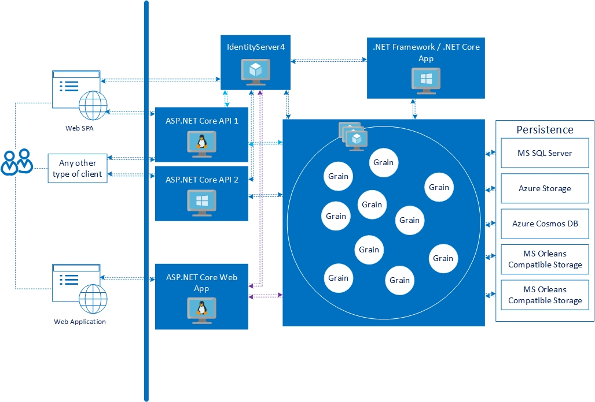
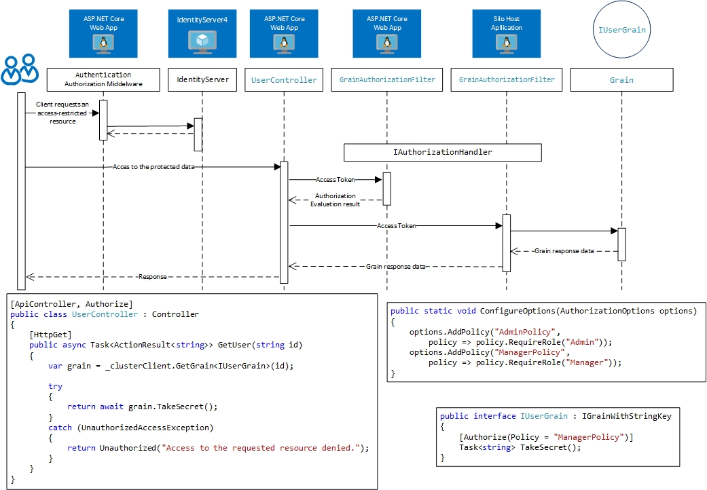

Authorization library for Microsoft Orleans
The set of security packages for Microsoft Orleans 2.x.x/3.1.x provide the ability to use the same authorization functionality which is used in ASP.NET Core 2.x/3.x. It allows sharing IdentityServer4 (version 2 or version 3) with MS Orleans grains and any ASP.NET Core 2.x/3.x application.

The image below shows a round trip to the protected grain.

Get started now View it on GitHub
Getting started
Dependencies
There are two packages: Orleans.Security.Cluster and Orleans.Security.ClusterClient. The first is for a silo host project and the seccond for an Orleans cluster client.
Quick start
Please see sample solution for more details.
License
Orleans.Security is distributed by an MIT license.
Contributing
Contributions are welcome, please contact via Azure DevOps, email admin@asynchub.org, or any other method with the owners of this repository.